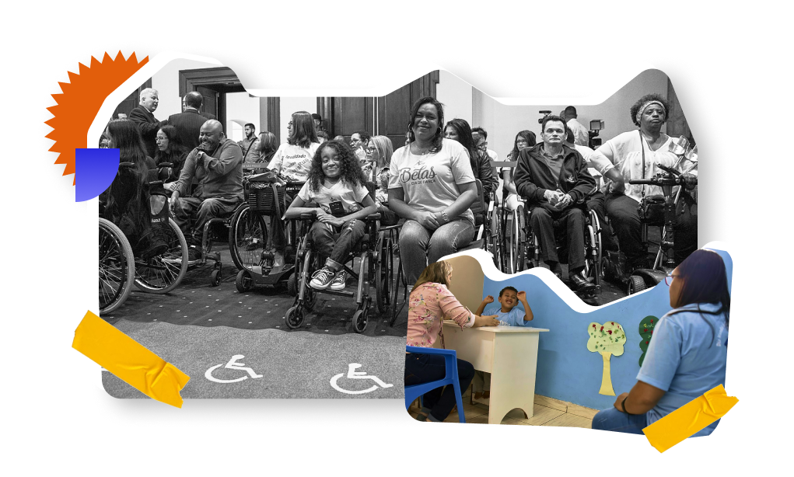
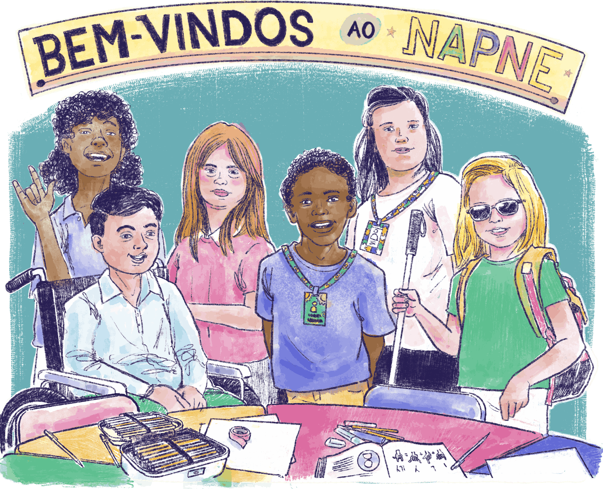

Trabalho colaborativo e a gestão para inclusão
O atendimento a estudantes da Educação Especial requer uma ação coletiva. Para além dos processos de acessibilidade já discutidos, que inclui o envolvimento de toda equipe escolar, é fundamental o fomento da parceria entre os docentes das salas de aula comuns e os profissionais do Atendimento Educacional Especializado (AEE).
De acordo com o Art. 2º, parágrafo I, do Decreto 7.611, de novembro de 2011, o AEE é compreendido como o conjunto de atividades, de recursos pedagógicos e de acessibilidade organizados institucional e continuamente. Ainda segundo este artigo, os atendimentos podem ser prestados de forma complementar à formação dos estudantes PcD e TGD, sendo um apoio permanente e limitado no tempo e na frequência dos estudantes às salas de recursos multifuncionais, ou de forma suplementar à formação de estudantes com altas habilidades.
Portanto, o AEE é uma estratégia fundamental para garantir acessibilidade aos estudantes PcDs, TGD e com altas habilidades, fazendo-se necessário que este trabalho seja assumido por docentes habilitados, com formação específica. Mas o AEE só faz sentido para a concepção de inclusão se estiver integrado às ações dos demais docentes que ministram aulas nas salas comuns. Essa articulação, segundo Scherer (2022, p. 11),
constitui-se como um dos pilares para a construção de uma organização pedagógica que respeite os estudantes e suas necessidades e auxilie-os na apreensão dos conhecimentos escolares. Destaca-se ainda, em termos analíticos, que o professor de AEE atua em diferentes momentos da intervenção pedagógica desde o planejamento, passando pela intervenção com o estudante na sala de aula comum, nos laboratórios e nas salas de recursos multifuncionais auxiliando também nos momentos de avaliação das aprendizagens.
Tendo em vista as singularidades de aprendizagem de cada estudante da Educação Especial, é fundamental que a gestão escolar acompanhe e mobilize o corpo docente para a reflexão, a avaliação, a identificação e a seleção de estratégias que fortaleçam o trabalho de diferenciação curricular.
Essas ações colaborativas são essenciais para criar um ambiente educacional mais inclusivo e equitativo, pois permitem o compartilhamento de conhecimentos, de recursos e de melhores práticas entre diferentes partes interessadas. Assim, criar a cultura do trabalho colaborativo entre docentes das salas comuns e do AEE fortalece a implementação da política de inclusão, mas também institui um sentido democrático, participativo e coletivo na comunidade escolar.
Cabe à gestão escolar a responsabilidade e o compromisso de organizar os espaços escolares e contribuir no apoio às práticas pedagógicas, na garantia do AEE e na promoção junto à comunidade de uma pedagogia da diversidade, por meio da efetivação das Ações Afirmativas. Assim, é uma exigência gerir a escola em função da eliminação das barreiras físicas, atitudinais e curriculares, além de ser seu papel promover a garantia ao acesso, à permanência e à participação no ensino regular, incluindo-se aí o avanço da aprendizagem dos estudantes da Educação Especial.

Título: O público alvo da Educação Especial
Fonte: Pillar Pedreira (2018); Governo do Estado de São Paulo (2018).
Elaboração: Prosa (2025h).
Além desta ação que vigora em âmbito nacional, outra política fundamental voltada para a inclusão, criada nos Institutos Federais (IFs), são os Núcleos de Apoio aos Portadores de Necessidades Específicas (NAPNEs), que têm por objetivo implementar ações para a inclusão dos sujeitos da diversidade na escola. Os NAPNEs incentivam a pesquisa aplicada em Tecnologia Assistiva e discutem sobre aspectos técnicos e pedagógicos, além de abordarem questões sobre adaptações e diferenciação curricular, quebra de barreiras arquitetônicas, atitudinais e educacionais, bem como as especificidades e as peculiaridades de cada deficiência.
Cabe à gestão dos IFs fazer do NAPNE seu espaço de mediação pedagógica e administrativa para garantir sua efetividade. Como são núcleos constituídos de diversos profissionais, também é um grande indutor da construção do trabalho colaborativo.
Faz-se cada vez mais necessário promover o sentido de atuação e de responsabilidade coletiva. Estudantes da Educação Especial não são estudantes de um setor ou de docentes específicos. Eles são estudantes como todos os outros. Toda a comunidade é responsável por sua inclusão e pela garantia de sua permanência e participação. E aqui reside uma questão importante: como temos tratado essa responsabilização nas instituições? Como a vida escolar dos estudantes da Educação Especial é cuidada? Há um trabalho colaborativo em torno dos desafios que se apresentam?

Título: O NAPNE como uma política de inclusão
Fonte: Prosa (2025i).
Ainda nessa direção, vale destacar que outros movimentos de trabalho coletivo podem e devem ser instituídos. São exemplos: parcerias com as famílias, parcerias com outras instituições que desenvolvem pesquisas e parcerias com movimentos sociais. A partir desta última, pode-se constituir caminhos para gestores buscarem fundos e investimentos e pressionarem instâncias na tentativa de garantir recursos financeiros para superar as barreiras escolares.
Para refletir: inclusão por meio da assistência estudantil
Cabe mencionar, como exemplo, a gestão de inclusão de pessoas com deficiência por meio de políticas institucionais de assistência estudantil. Esse é o caso do Instituto Federal do Rio Grande do Sul (IFRS), o qual tem atuado nesse campo por meio dos Fóruns de Assistência Estudantil (FAE/IFRS), realizados para avaliar o impacto das ações desenvolvidas, dirigidas à inclusão, tendo por base indicadores de avaliação sobre trajetória acadêmica, permanência e diplomação dos estudantes com deficiência.
É importante destacarmos que parcerias externas requerem um compromisso com a colaboração, com o respeito mútuo e com a equidade de poder entre todas as partes envolvidas. Se a escola busca essas parcerias, ela precisa ouvir e aprender com as demais instituições e entidades que têm conhecimentos e experiências que podem ajudar na construção da política de educação para as diversidades. Por outro lado, as instituições e as entidades precisam colaborar efetivamente no desenvolvimento e na implementação de políticas e de programas de inclusão na educação. Aqui, cabe à gestão garantir que a vida escolar dos estudantes da Educação Especial seja respeitada e preservada dentro dos limites éticos das ações propostas pelas parcerias firmadas.
Por fim, o trabalho da gestão deve envolver a motivação e a mobilização de ações, aliadas ao conhecimento da legislação e à compreensão das relações entre a escola, sua função social e seu papel político-institucional.
Chegamos ao fim desta Unidade Temática!
Ao longo dela, discutimos sobre o respeito à diferença e o direito de exigir igualdade de acesso à educação para todos os sujeitos da diversidade. Além disso, compreendemos como os movimentos sociais contribuíram para a construção das políticas da diferença, o quanto nos ensinaram e sobre nosso papel como partícipe na implementação dessas políticas. Ainda, vimos como os princípios da educação integrada convergem com os princípios que constroem uma política de educação para as diversidades.
Também debatemos sobre como a gestão escolar é fundamental para garantir uma pedagogia da diversidade e para consolidar as ações afirmativas com vistas ao acesso e à permanência de estudantes que adentram à EPT por meio dessa política. Nessa direção, refletimos sobre como o tripé ensino-pesquisa-extensão pode se constituir em tempos e espaços de promoção de uma educação democrática e inclusiva. Por fim, buscamos observar como a gestão também tem papel e responsabilidade na construção de uma escola com acessibilidade, justiça curricular e inclusão.
Esperamos que as reflexões aqui trazidas sejam mobilizadoras para a sua atuação como liderança na sua comunidade escolar em prol de uma pedagogia da diversidade e na defesa do direito à diferença. Agora, cabe a você ampliar sua ação como partícipe desse movimento transformador na educação brasileira.